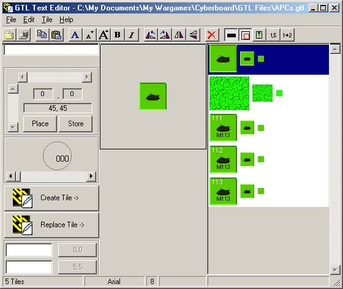

GTL Text Editor - A utility for Cyberboard
GTL Text Editor is a Microsoft Visual Basic program designed to easily add
formatted text to Cyberboard counters. GTL Text Editor makes it easy to add
text, and position the text where you want it. Using GTL Text Editor you can
process multiple counters into a GTL file for easy import into Cyberboard
Designer.
GTL Text Editor was inspired by Bill Gustafsons "Bill's Cyberboard Utilities."
The Visual Basic 6.0 Runtime Module is REQUIRED for GTL Text Editor but IS NOT
included with the GTLEditorInstall.exe file. If you do not have the Visual Basic Runtime Module on your computer you
can download it from either the Microsoft or CNET sites.
Features in this release (2.3)
- Supports rectangular tiles and tile sizes up to 256x256
- View, add, edit, and delete tiles from any Cyberboard GTL file
- Add formatted text to Cyberboard tiles
- System and Truetype fonts
- Font sizes from 6 to 18 points
- 16 colored fonts
- Bold, Italic, and Underlined fonts
- Fully rotating text placement
- Rotate square tiles, flip square and rectangular tiles
- Save Text Position Data for future use
- Tile creation automation
- Create tiles directly from the Working Tile Area
- Create half sized tile from the Working Tile Area
- Aid rapid tile creation using Text Position Data
- Automatically increment numbers to create a tile series
- Create individual bitmap files from GTL file tiles
- Save/Delete single or multiple tiles using conventional Ctrl and Shift keys
FIXED IN VERSION 2.3: The scrolling problem which caused the program to crash.
